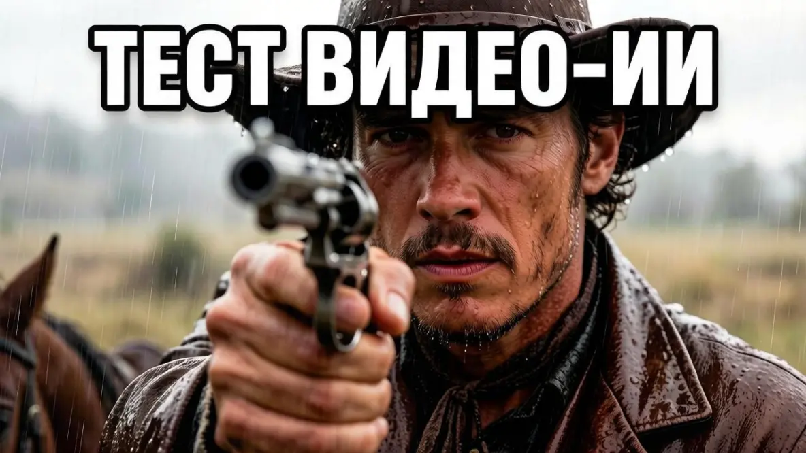

Ковбой против нейросетей: MiniMax и Pika не справились с вестерном

Я решил проверить, как современные нейросети для генерации видео справляются с действительно сложными сценами. Взял один и тот же сюжет — суровый ковбой верхом на лошади под проливным ливнем, который в финале направляет пистолет прямо в камеру. Прогнал этот промт через два движка: MiniMax и Pika. Результаты оказались настолько разными, что сравнивать их почти невозможно. Но оба — с треском провалились.
Больше полезного про нейросети — простым языком, каждый день в нашей группе ВКонтакте
Перейти во ВКонтакте →Если вкратце: MiniMax выдаёт шикарную картинку — лицо ковбоя, кожа, текстура одежды, мокрая шляпа — всё выглядит как кадр из дорогого голливудского фильма. Но анимация и логика происходящего просто убивают всю магию. А Pika, наоборот, даёт правильную композицию и атмосферу, но персонажи и предметы получаются пластиковыми, а оружие превращается в бесформенную массу.
Главная проблема обеих нейросетей — полное отсутствие внятной физики и анимации. MiniMax превратил сцену в какой-то водный апокалипсис: ковбой скачет по прерии, а вокруг него бушует цунами. При этом лицо у персонажа очень реалистичное, но движение лошади больше похоже на странный скользящий эффект, чем на реальный галоп. Pika же сгенерировала понятную локацию и грамотно расставила объекты в кадре, но все персонажи вышли неживыми, с неестественными позами и, самое ужасное, с пистолетом, который нейросеть то ли не поняла, то ли намеренно исказила.
Говорить о звуковом сопровождении вообще не приходится — ни MiniMax, ни Pika не генерируют звук. На выходе всегда чистый немой фильм, который потом нужно озвучивать отдельно. И это одна из главных точек боли для тех, кто хочет получить готовый ролик «из коробки».
Честно говоря, результаты этого теста меня расстроили. Обе нейросети уже ощутимо устарели по современным меркам. Индустрия видео-ИИ шагнула далеко вперёд, и на рынке есть гораздо более продвинутые решения. Но даже они пока что не справляются со сложными динамичными сценами на сто процентов. Нейросети всё ещё путаются в физике объектов, ломают пропорции тела и теряют логику движения.
Технически MiniMax обыгрывает конкурента по чистой графике: детализация кожи, отражения на мокрой одежде, атмосферный свет — тут он вне конкуренции. Но если смотреть на общую картину, а не отдельные кадры, то Pika оказывается более адекватным выбором: композиция правильная, объекты не уплывают в океан и не превращают прерии в море. При этом я не могу назвать победителя, потому что каждая нейросеть провалилась по-своему.
Итоговый вердикт: кто лучше? Никто. Выбрать победителя в этом баттле невозможно. По уровню реализма картинки MiniMax всухую разносит конкурента. Лицо ковбоя, его кожа, текстура одежды и шляпа выглядят как настоящий качественный фильм. Но вы получите немое кино со штормовым океаном на фоне прерий. Если нужна правильная композиция без цунами — Pika выдаёт нужную атмосферу видеоряда, но кадр получается пластиковым, ИИ безбожно калечит оружие и ломает формат экрана. Звука нет вообще — на выходе чистый немой фильм.
Качество генерации — не ахти. На сегодняшний день обе эти нейросети уже морально устарели, а со сложными динамичными сценами ИИ до сих пор справляется со скрипом. Индустрия ушла далеко вперед.
Тот самый сложный англоязычный промт, которым я гонял эти движки, со всеми кинематографичными тегами (на нужный ракурс, свет и текстуру кожи ковбоя, воды) я выложил у себя на канале.
Перейти во ВКонтакте «ЖИВОЙ ИИ»
Ещё по теме
Битва видео-ИИ: Google Veo 3 против Pixverse — кто сделает круче на одном промте